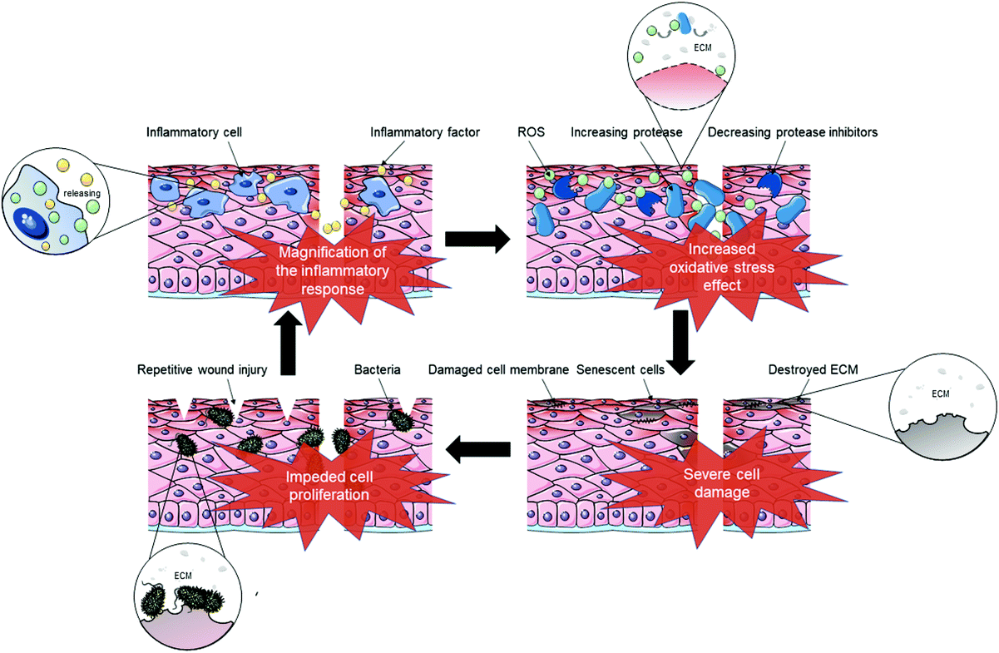
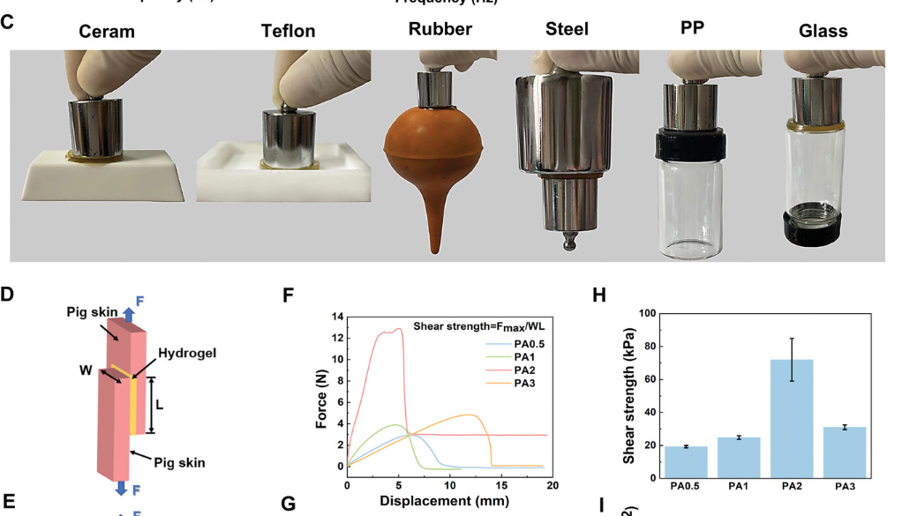
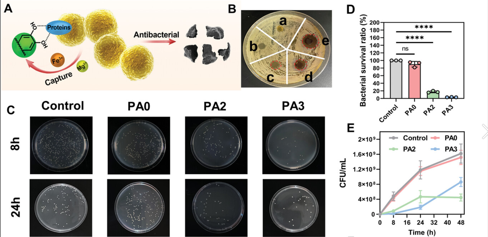
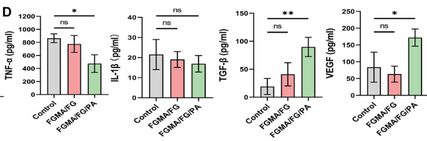

目前我们已经知道，糖尿病伤口难以愈合的原因是伤口的炎症期因为某些原因无法结束。于是现在我们聚焦炎症期，看看慢性伤口与正常伤口有何不同，有哪些信号通路参与这一现象的形成，以及一些通过改善信号通路来治疗伤口的研究
Harmful inflammatory cycle of chronic wounds. Chronic wounds that are stagnant in the inflammatory phase may cause abnormal accumulation of inflammatory cells in the wound, causing the amplification of the inflammatory response. Excessive inflammatory cells lead to the destruction of the ECM and the degradation of growth factors and their receptors, which in turn intensifies the production of ROS and disrupts the redox balance of cells. ROS further enhances the degradation of the ECM, eventually leading to severe cell membrane damage and repeated wound contusions. In addition, delayed wound healing increases the risk of wound infection and thus causes wound deterioration.
慢性伤口很难像正常伤口愈合过程那样有组织地及时愈合。它们主要表现为促炎因子调节失衡、活性氧（ROS）过多、衰老细胞和蛋白酶产生，以及真皮或表皮细胞难以应对反复的伤口挫伤，有时还伴有持续感染

这是慢性伤口的有害炎症循环
ECM(extracellular matrix)是细胞外基质
M1巨噬细胞和M2巨噬细胞之间的转化失败导致伤口中炎性细胞的异常积累，引起炎症反应的放大。
过多的炎症细胞导致ECM的破坏和生长因子及其受体的降解，这反过来又加剧了ROS的产生并破坏了细胞的氧化还原平衡。ROS进一步增强ECM的降解，最终导致严重的细胞膜损伤和反复的伤口挫伤。此外，延迟的伤口愈合增加了伤口感染的风险，从而导致伤口恶化。
这篇文章指出巨噬细胞的转化失败导致炎症反应放大是导致炎症期无法结束的原因之一，接下来重点看巨噬细胞
The roles of macrophage in wound healing.
In the early phase of wound repair, upon exposure to pro-inflammatory cytokines, interferons (IFNs), PAMPs or DAMPs, infiltrating monocytes and resident macrophages are activated and mainly acquire a pro-inflammatory M1 phenotype. They perform phagocytosis of microbes, scavenge cellular debris and produce pro-inflammatory mediators.
Later during healing process, IL4, IL-10, Glucocorticoids, Prostaglandins (PGs) and modulators of glucose and lipid metabolism induce macrophages to transit to a reparative M2 phenotype, which secret anti-inflammatory mediators and growth factors. Macrophages also remove neutrophils in the wounds by phagocytosis, a central element to induce the M1-M2 phenotype switch of macrophages.
Macrophages are one of the key cell types responsible for maintaining their homeostasis and regulating inflammatory and regenerative processes. They are present in all organs and tissues , their circulating form is called a monocyte and the resident form is called a macrophage.
Macrophages are an extremely heterogeneous group of cells with a highly variable receptor profile and functional activity due to their plasticity.
功能：维持体内平衡、调节炎症和再生过程
分布：存在于所有器官和组织中
命名：循环形式称为monocyte ，常驻形式称为macrophage
特点：巨噬细胞是一种极其异质的细胞群，由于其可塑性，具有高度可变的受体谱和功能活性，M1与M2只是其多种形态中的两种
由pro-inflammatory cytokines，interferons (IFNs)，PAMPs 和 DAMPs诱导
具有清除微生物，吞噬细胞碎片，释放促炎因子的功能
由IL4，IL-10，Glucocorticoids，Prostaglandins (PGs) 和 modulators of glucose and lipid metabolism诱导
具有分泌抗炎介质，生长因子，吞噬中性粒细胞的功能
有关为何在糖尿病伤口中巨噬细胞的M2转化容易失败，可能涉及到更多的信号通路调控，这里提供一点参考
2.2.3高血糖。高水平的血糖已被证实与糖尿病伤口的愈合有关。研究表明，当血糖水平高时，在伤口周围的组织中发现巨噬细胞显著减少，这可能导致炎症反应障碍。在高血糖水平的情况下，葡萄糖倾向于与蛋白质反应产生AGEs。目前，AGEs的积累被认为与糖尿病伤口愈合困难有关。AGEs可引起胶原蛋白的糖基化，形成不易降解的交联物质，最终导致血管生成和组织重塑的延迟。此外，AGEs可以促进ROS的产生并增加氧化应激，这可以影响胶原蛋白的合成并对伤口愈合产生不利影响。因此，控制AGEs的生长可以有效地促进血管生成和肉芽组织形成，这可以加速糖尿病伤口的愈合。
The protocatechuic aldehyde hybridized collagen-based all-natural hydrogel exhibits good bioadhesive and antibacterial properties as well as reactive oxygen species scavenging ability. More importantly, the hydrogel is able to convert M1 macrophages into M2 macrophages without the need for any additional ingredients or external intervention.
Protocatechuic aldehyde (PA) is a natural compound derived from Salvia miltiorrhiza with an unique phenolic aldehyde structure compared to natural polyphenols such as tannic acid and gallic acid with only phenol structure. Therefore, it can form reversible Schiff base bonds with amino groups. Studies have shown that PA has good anti-inflammatory and antibacterial effects and has been used in clinical applications as an active ingredient in the coronary heart disease drug.PA has also been used in the treatment of chronic nephritis, vascular disease, etc., displaying good biocompatibility. In addition, PA contains catechol groups with the ability to scavenge ROS. These good properties make PA highly suitable for diabetic wound treatment. However, the mechanism by which PA modulates immune microenvironment at diabetic wounds to accelerate wound healing remains to be investigated. Meanwhile, fish gelatin (FG) was a good candidate of the hydrogel matrix, which contains arginine-glycine-aspartate (RGD) peptide sequence that can interact with integrin receptors so that it has the ability to promote anti-inflammatory transformation.
the introduction of PA endows the hydrogel with intrinsic chemical antibacterial effect and ROS scavenging ability, thus reducing inflammation of the wound. Because of these, the all-natural hydrogel is capable to promote the polarization of macrophages toward the M2 phenotype without adding any active ingredient.
一种来源于丹参的天然化合物
良好的抗炎和抗菌作用
良好的生物相容性
PA含有邻苯二酚基团，具有抑制ROS的能力
含有精氨酸-甘氨酸-天冬氨酸（RGD）肽序列，可与整合素受体相互作用，具有促进抗炎转化的能力
由PA，FG，FGMA（交联剂）组成的全天然水凝胶
PA的引入赋予水凝胶内在的化学抗菌作用和ROS清除能力，从而减少伤口的炎症，从而促进巨噬细胞向M2表型极化，而无需添加任何活性成分
检验实验
是否具有促进细胞迁移和粘附的多孔结构：扫描电子显微镜（SEM）
机械性能：测试储能模量与损耗模量 
组织粘附强度：猪皮进行宏观粘附性能测试，搭接剪切和剥离实验
稳定性和生物降解性：测量溶胀比，浸入II型胶原酶溶液中研究体外降解
抗菌性能：平板计数法，FTIR光谱测试以验证相互作用的变化 
生物相容性：L929细胞直接接触培养法和渗滤液培养法
抗ROS潜力：细胞内ROS清除率通过ROS指示剂二氯二氢荧光素二乙酸酯（DCFH-DA）测量
证明抗炎作用是通过免疫调节巨噬细胞转化实现的：Raw 264.7细胞与FGMA/FG和FGMA/FG/PA水凝胶共培养24小时来验证水凝胶的免疫调节能力，并且PBS处理组用作对照组。免疫荧光染色法检测M2巨噬细胞的特征性标志物CD 206的表达。用FGMA/FG/PA水凝胶处理LPS刺激的极化M1巨噬细胞后，M1巨噬细胞的百分比显著降低至21.60%，M2巨噬细胞的百分比增加至40.35%。
检测相关细胞因子的分泌：酶联免疫吸附试验（ELISA），使用不同水凝胶处理的巨噬细胞的CM培养人脐静脉内皮细胞 
免疫调节和抗感染能力：建立金黄色葡萄球菌感染创面模型，对M1巨噬细胞和M2巨噬细胞进行免疫荧光染色，结果证实了FGMA/FG/PA水凝胶在体内调节巨噬细胞极化的能力。免疫调节能力在第一天通过血液样品的ELISA测试进一步验证。Masson三色染色还显示FGMA/FG/PA水凝胶可促进胶原蛋白形成和沉积
以上都是体外实验，下面是体内实验
愈合速度测试：
通过向Sprague道利大鼠施用链脲佐菌素（STZ）并每天检测血糖的变化，当血糖水平始终>16.65 mmol L −1 时，成功建立了糖尿病大鼠模型。
产生整个伤口（直径10 mm）并分别用PBS、FGMA/FG和FGMA/FG/PA水凝胶处理。
观察不同阶段的伤口愈合来评估FGMA/FG/PA水凝胶对加速糖尿病伤口愈合的作用：炎症、增殖和重塑
通过Masson三色染色观察新胶原的形成
血管生成：免疫荧光检测
重塑阶段的胶原蛋白沉积、重塑和毛囊再生检测：Masson三色染色显示，与其它两组相比，FGMA/FG/PA水凝胶处理的伤口在第21天表现出更好的胶原蛋白沉积和毛囊再生。用免疫荧光染色进一步观察伤口毛囊和胶原结构的再生。
总结：现在知道糖尿病伤口无法正常愈合是由于炎症期无法正常结束导致的，而炎症期无法正常结束的一个重要原因是巨噬细胞从促炎表型向修复表型的转化失败，一项水凝胶敷料的研究证明通过清除ROS和抗菌作用减少炎症可以促进巨噬细胞的转化，并且有助于糖尿病伤口的愈合。但是有关巨噬细胞的转化调控机制并没有描述清楚，而且该研究的转化率并不算高，接下来可以探明巨噬细胞的转化调控机制和更加高转化率的水凝胶方案